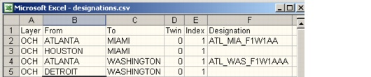

Importing and Exporting Data > Data File Formats > Link Designations Data Files
Link Designations Data Files
Link designations data files allow you to attach designations (tags) to links on the DCL, OCH and OTS layer. These files use the format shown in Figure 5-19. The first row contains four to six headers; each subsequent row describes one link.
Figure 5-19 Link Designations Data File

| Home © 1987-2007 OPNET Technologies, Inc. All Rights Reserved. This software may be covered by one or more U.S. Patents. See complete patent notice in the Legal Notices section. OPNET Support Center |